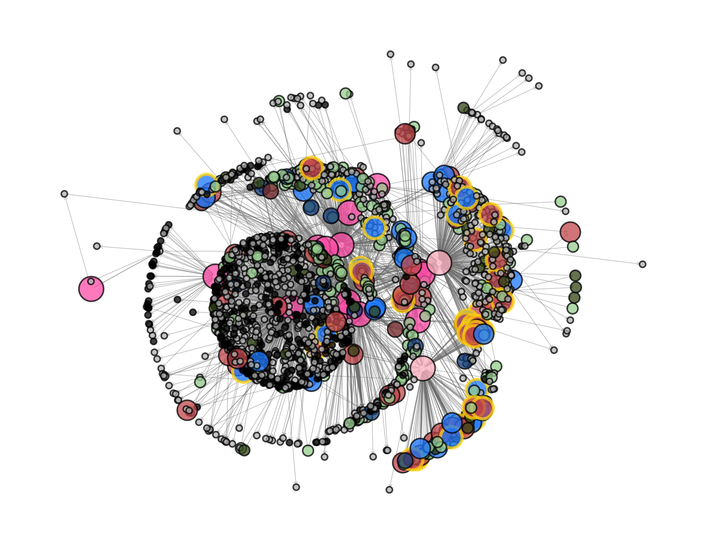
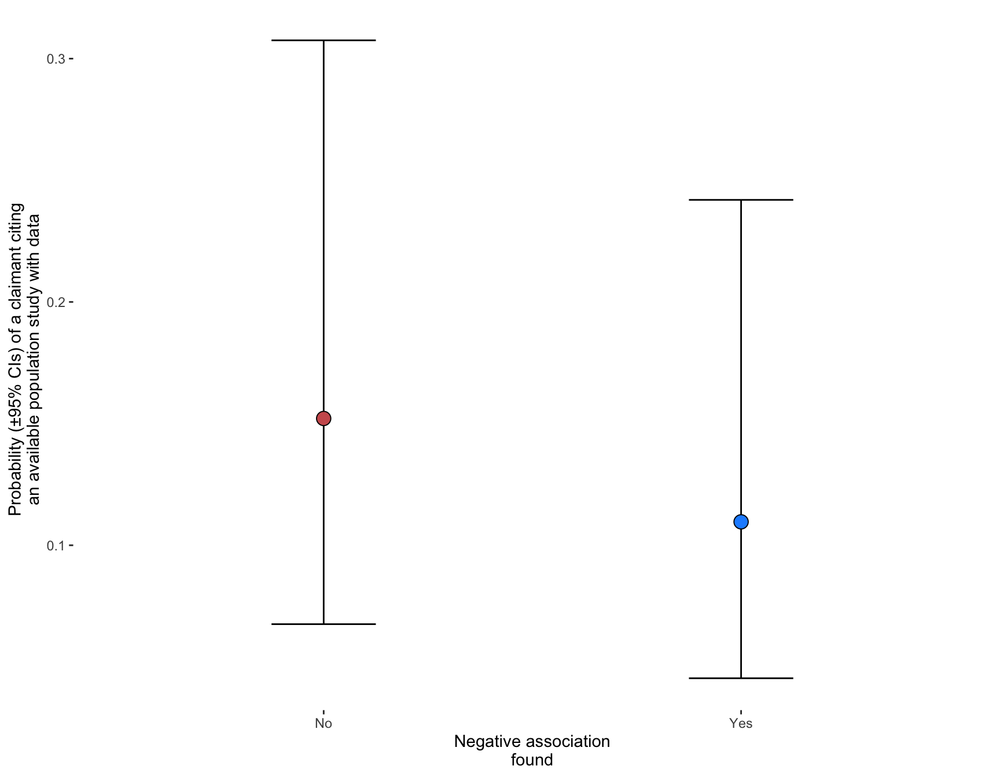

Citation network
Prepare environment & load data
The data for this analysis consists of two files, one for the nodes (e.g., each article) and one for the edges (the citations between articles).
node_id
<char>
1: (ACAP 2009b)_EXCLUDE_NA_Expert opinion_NA_NA
2: (Adams et al. 1997)_EXCLUDE_NA_Expert opinion_NA_NA
3: (Alberts 2000) core source_claim
4: (Alterio et al. 1998)_EXCLUDE_NA_Expert opinion_NA_NA
5: (Amarasekare 1993)_EXCLUDE_NA_Expert opinion_NA_NA
6: (Anthony 1925)_INCLUDE_NA_Predation in support_no_no
article_node_name evidence_inclusion Peer_reviewed_source
<char> <char> <char>
1: (ACAP 2009b) EXCLUDE
2: (Adams et al. 1997) EXCLUDE
3: (Alberts 2000) core source claim
4: (Alterio et al. 1998) EXCLUDE
5: (Amarasekare 1993) EXCLUDE
6: (Anthony 1925) INCLUDE
evidence_type has_data of_quality evidence_type_synthetic
<char> <char> <char> <char>
1: Does not test claim no Does not test claim
2: Does not test claim no Does not test claim
3: Core claim no Core claim
4: Does not test claim no Does not test claim
5: Does not test claim no Does not test claim
6: Predation in support no no Predation in support without data
evidence_type_fine evidence_type_simple in_support
<char> <char> <char>
1: Expert opinion Excluded Not relevant
2: Expert opinion Excluded Not relevant
3: Core claim Core claim Not relevant
4: Expert opinion Excluded Not relevant
5: Expert opinion Excluded Not relevant
6: Predation in support without data Predation without data Yes
evidence_type_synthetic_simple
<char>
1: Excluded
2: Excluded
3: Core claim
4: Excluded
5: Excluded
6: Predation in support without data cited_by_id
<char>
1: (Doherty et al. 2016) core source_claim
2: (Doherty et al. 2016) core source_claim
3: (IUCN 2025) core source_claim
4: (IUCN 2025) core source_claim
5: (IUCN 2025) core source_claim
6: (IUCN 2025) core source_claim
article_id edge_type
<char> <char>
1: (Alberts 2000) core source_EXCLUDE_NA_No claim citation
2: (Garnett et al. 2011) core source_EXCLUDE_NA_No claim citation
3: (Dickman 1996b) core source_EXCLUDE_NA_No claim citation
4: (Dickman 1996b) core source_EXCLUDE_NA_No claim citation
5: (Dickman 1996b) core source_EXCLUDE_NA_No claim citation
6: (Hume 2017) core source_EXCLUDE_NA_No claim citation
scientificName encounter_method
<char> <char>
1: Cyclura cychlura core_sources
2: Neophema chrysogaster core_sources
3: Onychogalea lunata core_sources
4: Perameles eremiana core_sources
5: Macrotis leucura core_sources
6: Gallinula nesiotis core_sourcesThese files have been cleaned and pre-processed in scripts/2_analysis/1 citation networks and bias.R and are ready to be used to create a network.
Create citation network
igraph.gr <- igraph::graph_from_data_frame(d = edges,
vertices = nodes,
directed = T)
igraph.grIGRAPH eb47d78 DN-- 1793 3105 --
+ attr: name (v/c), article_node_name (v/c), evidence_inclusion (v/c),
| Peer_reviewed_source (v/c), evidence_type (v/c), has_data (v/c),
| of_quality (v/c), evidence_type_synthetic (v/c), evidence_type_fine
| (v/c), evidence_type_simple (v/c), in_support (v/c),
| evidence_type_synthetic_simple (v/c), edge_type (e/c), scientificName
| (e/c), encounter_method (e/c)
+ edges from eb47d78 (vertex names):
[1] (Doherty et al. 2016) core source_claim->(Alberts 2000) core source_EXCLUDE_NA_No claim
[2] (Doherty et al. 2016) core source_claim->(Garnett et al. 2011) core source_EXCLUDE_NA_No claim
+ ... omitted several edgesgraph <- tidygraph::as_tbl_graph(igraph.gr)Plot
Now, we’ll format factor levels, create color and size aesthetics and plot this:
unique(nodes$evidence_type_synthetic_simple) [1] "Excluded"
[2] "Core claim"
[3] "Predation in support without data"
[4] "Population not in support with data"
[5] "Predation not in support without data"
[6] "Population in support without data"
[7] "Population in support with data"
[8] "Population not in support without data"
[9] "External review without claim"
[10] "Nothing cited" labels <- c(`Core claim` = "Core claim",
`External review without claim` = "External source without claim",
`Nothing cited` = "Nothing cited",
`Excluded` = "No primary data found",
`Predation in support without data` = "Predation record without data",
`Predation not in support without data` = "Predation record without data",
`Population in support without data` = "Population - description",
`Population in support with data` = "Population - study",
`Population not in support without data` = "Population - description",
`Population not in support with data` = "Population - study")
node_fill <- c(`Core claim` = "hotpink", `External review without claim` = "pink",
Excluded = "grey", `Nothing cited` = "black",
`Predation in support without data` = "#a6d3a0",
`Predation not in support without data` = "#40531b",
`Population not in support without data` = "indianred4", `Population not in support with data` = "indianred",
`Population in support without data` = "dodgerblue4", `Population in support with data` = "dodgerblue"
)
node_size <- c(`Core claim` = 5, `External review without claim` = 5, `Opportunistic` = 1,
Excluded = 1,
`Predation without data` = 2, #`Control program without data` = 2,
`Population without data` = 3, `Population with data` = 4)
unique(nodes$of_quality)[1] "no" "yes"character(0)character(0)p1 <- ggraph(graph, layout = "kk")+
geom_edge_fan(arrow = arrow(length = unit(1, 'mm')),
start_cap = circle(1, 'mm'),
end_cap = circle(1, 'mm'),
color = "grey50",
alpha = .5,
linewidth = 0.25) +
geom_node_point(aes(fill = evidence_type_synthetic_simple,
color = of_quality,
stroke = of_quality,
size = evidence_type_simple),
shape = 21,
alpha = .75)+
scale_fill_manual("Article type",
values = node_fill,
labels = labels)+
scale_size_manual("Article type",
values = node_size *2,
breaks = levels(nodes$evidence_type_simple))+
guides(size = "none",
fill = "none",
color = "none",
stroke = "none")+
scale_discrete_manual("Quality research",
aesthetics = "stroke",
values = c(1, 2))+
scale_color_manual("Quality research",
values = stroke_color )+
theme_graph()+
theme(legend.position = 'bottom')
p1
And the formatted legend:

Probability of being cited
Now, let’s evaluate the terminus of each citation chain from the core claimant sources (the large bright pink points). What is the probability that those citation chains end in population studies?
We’ll load a separate data frame produced by scripts/3 create probability of being cited dataset.R. This dataset is organized as claimant-claimant-source article pairs. Each row is a potential citation. The colum cited (0 or 1) indicates whether the article was cited or not. Pairs are constrained by species and publication timing (e.g., articles published after claimant reviews were finished are excluded).
This dataset allows us to evaluate whether claimants cited available evidence.
Load data and filter to only claimant sources:
terminus_exploded_filtered <- fread("builds/citation_network/citation_probability.csv")
# Filter to only claimant sources
terminus_exploded_filtered[, making_claim := ifelse(grepl("_claim",
cited_by_id),
"CLAIM",
"NO_CLAIM")]
terminus_exploded_filtered <- terminus_exploded_filtered[making_claim == "CLAIM", ]
head(terminus_exploded_filtered) scientificName cited_by_id source_year
<char> <char> <int>
1: Acrocephalus aequinoctialis (IUCN 2025) core source_claim 2018
2: Acrocephalus hiwae (IUCN 2025) core source_claim 2023
3: Acrocephalus hiwae (IUCN 2025) core source_claim 2023
4: Acrocephalus hiwae (IUCN 2025) core source_claim 2023
5: Acrocephalus longirostris (Hume 2017) core source_claim 2016
6: Acrocephalus longirostris (IUCN 2025) core source_claim 2018
Peer_reviewed_source potential_node
<char> <char>
1: (VanderWerf et al. 2016)
2: (Camp et al. 2009)
3: Thesis (Mosher 2006)
4: (USFWS 1998b)
5: (Seitre & Seitre 1989)
6: (Seitre & Seitre 1989)
potential_evidence
<char>
1: (VanderWerf et al. 2016)_EXCLUDE_NA_Expert opinion_NA_NA
2: (Camp et al. 2009)_EXCLUDE_NA_No claim_NA_NA
3: (Mosher 2006)_EXCLUDE_Thesis_Failure to access or locate online full citation_NA_NA
4: (USFWS 1998b)_EXCLUDE_NA_Expert opinion_NA_NA
5: (Seitre & Seitre 1989)_EXCLUDE_NA_Not in English or Spanish_NA_NA
6: (Seitre & Seitre 1989)_EXCLUDE_NA_Not in English or Spanish_NA_NA
pub_year evidence_inclusion evidence_type_fine
<num> <char> <char>
1: 2016 EXCLUDE Expert opinion
2: 2009 EXCLUDE No claim
3: 2006 EXCLUDE Failure to access or locate online full citation
4: 1998 EXCLUDE Expert opinion
5: 1989 EXCLUDE Not in English or Spanish
6: 1989 EXCLUDE Not in English or Spanish
evidence_type_synthetic in_support has_data of_quality cited making_claim
<char> <char> <char> <char> <int> <char>
1: Does not test claim Not relevant no 0 CLAIM
2: No claim Not relevant no 1 CLAIM
3: Inaccessible Not relevant no 1 CLAIM
4: Does not test claim Not relevant no 1 CLAIM
5: Inaccessible Not relevant no 0 CLAIM
6: Inaccessible Not relevant no 1 CLAIMNow we’ll do a binomial model on articles that are population studies with data. We’ll also manually calculate the percent of available population studies with data that were cited:
# >>> Model -----------------------------------------------------------------
# Overall:
m <- glmmTMB(cited ~ 1 + (1|cited_by_id) + (1|scientificName),
family = binomial(link = "logit"),
data = terminus_exploded_filtered[grepl("Population", evidence_type_synthetic) &
has_data == "yes", ])
summary(m) Family: binomial ( logit )
Formula: cited ~ 1 + (1 | cited_by_id) + (1 | scientificName)
Data:
terminus_exploded_filtered[grepl("Population", evidence_type_synthetic) &
has_data == "yes", ]
AIC BIC logLik -2*log(L) df.resid
258.0 268.8 -126.0 252.0 270
Random effects:
Conditional model:
Groups Name Variance Std.Dev.
cited_by_id (Intercept) 0.2153 0.464
scientificName (Intercept) 2.6475 1.627
Number of obs: 273, groups: cited_by_id, 11; scientificName, 60
Conditional model:
Estimate Std. Error z value Pr(>|z|)
(Intercept) -1.9025 0.4234 -4.494 7e-06 ***
---
Signif. codes: 0 '***' 0.001 '**' 0.01 '*' 0.05 '.' 0.1 ' ' 1Now let’s evaluate whether there was a difference in citations between evidence in support or not of the hypothesis and plot this:
Family: binomial ( logit )
Formula: cited ~ in_support + (1 | cited_by_id) + (1 | scientificName)
Data:
terminus_exploded_filtered[grepl("Population", evidence_type_synthetic) &
has_data == "yes" & making_claim == "CLAIM", ]
AIC BIC logLik -2*log(L) df.resid
259.3 273.7 -125.6 251.3 269
Random effects:
Conditional model:
Groups Name Variance Std.Dev.
cited_by_id (Intercept) 0.2225 0.4717
scientificName (Intercept) 2.5809 1.6065
Number of obs: 273, groups: cited_by_id, 11; scientificName, 60
Conditional model:
Estimate Std. Error z value Pr(>|z|)
(Intercept) -1.7182 0.4624 -3.715 0.000203 ***
in_supportYes -0.3763 0.4380 -0.859 0.390177
---
Signif. codes: 0 '***' 0.001 '**' 0.01 '*' 0.05 '.' 0.1 ' ' 1tidy(m)# A tibble: 4 × 8
effect component group term estimate std.error statistic p.value
<chr> <chr> <chr> <chr> <dbl> <dbl> <dbl> <dbl>
1 fixed cond <NA> (Inte… -1.72 0.462 -3.72 2.03e-4
2 fixed cond <NA> in_su… -0.376 0.438 -0.859 3.90e-1
3 ran_pars cond cited_by_id sd__(… 0.472 NA NA NA
4 ran_pars cond scientificName sd__(… 1.61 NA NA NA pred <- predict(m, data.table(in_support = c("Yes", "No")),
re.form = NA, se = TRUE)
# predict_response(m)
# summary(m)
pred <- as.data.frame(pred) |> setDT()
crit <- qnorm(0.975)
pred[, lower_ci := fit - (se.fit * 1.96)]
pred[, upper_ci := fit + (se.fit * 1.96)]
pred[, fit := plogis(fit)]
pred[, lower_ci := plogis(lower_ci)]
pred[, upper_ci := plogis(upper_ci)]
#
pred$in_support <- c("Yes", "No")
pred fit se.fit lower_ci upper_ci in_support
<num> <num> <num> <num> <char>
1: 0.1096324 0.4859490 0.04534882 0.2419457 Yes
2: 0.1521083 0.4624421 0.06757522 0.3075126 No# Hmmm.
citation.p <- ggplot(data = pred,
aes(x = in_support,
fill = in_support, y = (fit),
ymin = (lower_ci), ymax = (upper_ci)))+
geom_errorbar(position = position_dodge(width = .75), width = .25)+
geom_point(position = position_dodge(width = .75),
shape = 21, size = 4)+
ylab("Probability (±95% CIs) of a claimant citing\nan available population study with data")+
scale_fill_manual("In support",
values = c("No" = "indianred", "Yes" = "dodgerblue"))+
xlab("Negative association\nfound")+
theme_bw()+
theme(panel.border = element_blank(),
panel.grid = element_blank(),
legend.position = "none")
citation.p
And let’s summarize the percent cited with descriptive statistics:
out <- terminus_exploded_filtered[grepl("Population", evidence_type_synthetic) &
has_data == "yes", .(n = .N),
by = .(cited, scientificName, cited_by_id, in_support)]
out <- dcast(out,
scientificName + in_support + cited_by_id ~ cited, value.var = "n",
fill = 0)
out[, total := `0` + `1`]
out[, perc_cited := `1` / total * 100]
out[, .(mean = mean(perc_cited), sd=sd(perc_cited)),
by = .(in_support)] in_support mean sd
<char> <num> <num>
1: Yes 17.34694 36.75858
2: No 23.00000 39.83552On average, claimants cited between 17 and 23% of available population studies with data (sd=±36.8, 39.8)